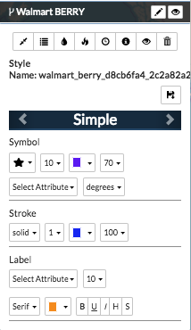
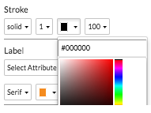

Styling Layers¶
Styling a layer highlights different aspects of your data by changing the size, shape or color of the symbols and map elements used to communicate specific attributes about your feature data. Styles can be used throughout an organization to help maintain consistency in data representation through selecting a style format that will maintain symbol size, shape and color. Layer styles can be modified directly from the map, and changes are visible to anyone with access to the layer.
- Important: There are a few things to keep in mind when you’re modifying the style for a layer.
- Once you save the changes to your layer, there is no way to undo the changes.
- The style changes you make to a layer apply only to that layer. It will not change the style format of any other layers on the map.
- You are able to individually change the style for multiple layers on a map.
- Due to the collaborative nature of Exchange, any saved style changes will persist for all other users.
There are five available style formats in Exchange, which can help you visualize relationships between your data and the map. They will be covered individually, but they are: Simple, Unique, Graduated, Choropleth and Heatmap.
You will first need to ensure your map is opened with the appropriate layer added. Some styles are better suited for point layers, while others may work better for lines or polygons. These differences will be explained in the individual sections, as well.
Simple¶
The Simple style allows you to change the symbol size, shape or color representing all of the features in the layer. This type of style format will work with any vector layer.
- Click the title of the layer in the layer list to expand the layer options.
- Click the Style Layer (droplet) button to open the style options.
The style options will open, and default to the Simple format.

- Under Symbol, select from the pull down menus to change shape, size and color of the symbol. You can also select which attribute you’d like the symbol to represent.

- Stroke allows you to change the outline of the shape. Select options to change the line from solid, dashed or dotted. Click the color block to select a new color. The default color for all style options is orange.

- If you would like to turn on an attribute label for your features, simply select the attribute in the pull down menu. You can also select the script, text size and color from the Label section.

- Once you’ve finished making your changes, click the Save Layer Changes (floppy disk) button for them to take effect.
The original layer has red squares representing the features, and none of the attribute labels are on.

Here is the layer after applying a Simple style format. We’ve changed the symbols to purple stars, and have changed the label styling.

Unique¶
The Unique style format requires you to have a relatively good understanding of your dataset. In this format, a different style will be applied to each unique value in an attribute field.
- Click the title of the layer in the layer list to expand the layer options.
- Click the Style Layer button to open the style options.
The style options will open, and default to the Simple format.
- Click the arrow next to the right of the “Simple” header to go to the Unique format options.

The Unique style format classifies the individual values for an attribute, and represents each of those values with a different color. It breaks the attribute data into qualitative groups, and makes each value its own color.
- Under Classification, select the attribute from the pull down menu whose data will be divided into unique values.
- Type the number of unique values for the attribute in the text box.
Understanding the dataset becomes increasingly important at this step, as you need to know how many unique values are represented for that attribute.
Prot Tip: For a fast count of how many unique values are available within a particular attribute, use the View Statistics feature from the Analyzing Data with Exchange section. It will give a quick count of unique values for the attribute.
- Select a color palette option from the drop down menu to represent each unique value.

- Select options from the Stroke pull down menus to change how the feature outline is displayed. Select options to change the line from solid, dashed or dotted. Click the color block to select a new color.
- If you would like to turn on an attribute label for your features, simply select the attribute in the pull down menu. You can also select the script, text size and color from the Label section.
Rules represent the breakdown of the individual values and their corresponding color from your attribute selections. You can click the X to remove a feature from this list, and it will not be represented on the map.

- Once you’ve finished making your changes, click the Save Layer Changes button for them to take effect.
This is what the layer looks like once the Unique style selections have been saved. Each feature is represented by a different color. The outline of the individual features is represented by the purple dashed line. Refresh the map to display the changes in the legend.

Choropleth¶
A Choropleth map uses variations in shading, color, or symbol placement to represent the average value of a feature in a particular area. An example of this would be using different colors to represent county crime rates within a state. Counties with higher rates might be represented in red, while those with lower averages would be yellow. The lowest average might be green.
- Click the title of the layer in the layer list to expand the layer options.
- Click the Style Layer button to open the style options.
The style options will open, and default to the Simple format.
- Click the arrow next to the “Simple” header until you get to the Choropleth format options.

- Under Classification, select the attribute from the pull down menu whose data will be classified by its averages.
- Choose the number of classes you want to divide your data into. The more classes you have, the more variation you’ll have in shading.
Note: Depending on what you are classifying, too many shade variations could be difficult to view. Use the number of classes that will best represent the purpose of your map.
- Select the data classification method from the pull down menu. Each method breaks the data into different categories, which changes how the data is represented on the map. Understanding how you want to represent your data will help you select which method will work best.

- Natural Breaks are based on the best arrangement of values for each class. The averages of the values are used to minimize variations within the classes, while maximizing variations between the classes.
- Equal Interval divides the value ranges in each category into equal sizes for each of the classes.
- Quantile classifies your data into a certain number of categories with an equal number of units in each category. It tries to put the same number of features into each class, so if we had five classes, we would see nearly an equal number of features in each class.
- Select a color scale from the Color Ramp.

- Select options from the Stroke pull down menus to change how the feature outline is displayed. Select options to change the line from solid, dashed or dotted. Click the color block to select a new color.
- If you would like to turn on an attribute label for your features, select the attribute in the pull down menu. You can also select the script, text size and color from the Label section.
- Once you’ve finished making your changes, click the Save Layer Changes button for them to take effect.
The following examples used the same dataset and the same number of classes (10). The data represents the population in the District of Columbia per the 2000 census, where yellow is the least populated areas and dark blue is more densely populated. You can clearly see the differences in how the data is represented by each classification method.
Natural Breaks - This arranges the groupings so that there is less variation in each class.

Quantile - There are approximately the same number of dark blue features as there are light yellow.

Equal Interval - The range of values for each class is equal. In this example, each class represents approximately 500 people.

Graduated¶
A graduated map uses proportional symbol sizes to represent the differences in the value of an attribute.
- Click the title of the layer in the layer list to expand the layer options.
- Click the Style Layer button to open the style options.
The style options will open, and default to the Simple format.
- Click the arrow next to the “Simple” header until you get to the Graduated format options.

- Under Classification, select the attribute from the pull down menu whose data will be classified by the magnitude of its value.
- Choose the number of classes for dividing your data.
- Select the data classification method from the pull down menu. Each method breaks the data into different categories, which changes how the data is represented on the map. Understanding how you want to represent your data will help you select which method will work best.

Note: Please see the above section on Choropleth maps for a full explanation of each of the methods. Graduated maps use the same methods for dividing the data.
- The Min-Max range is used to constrain the visual size for each feature cluster. Ideally, the range should match the number of classes, but to make clusters appear bigger, select a Min-Max range that is larger than the number of classes.

- Select options from the Stroke pull down menus to change how the feature outline is displayed. Select options to change the line from solid, dashed or dotted. Click the color block to select a new color.
- If you would like to turn on an attribute label for your features, select the attribute in the pull down menu. You can also select the script, text size and color from the Label section.
- Once you’ve finished making your changes, click the Save Layer Changes button for them to take effect.
In the example below, you can see the higher concentration of features represented by the larger circles.